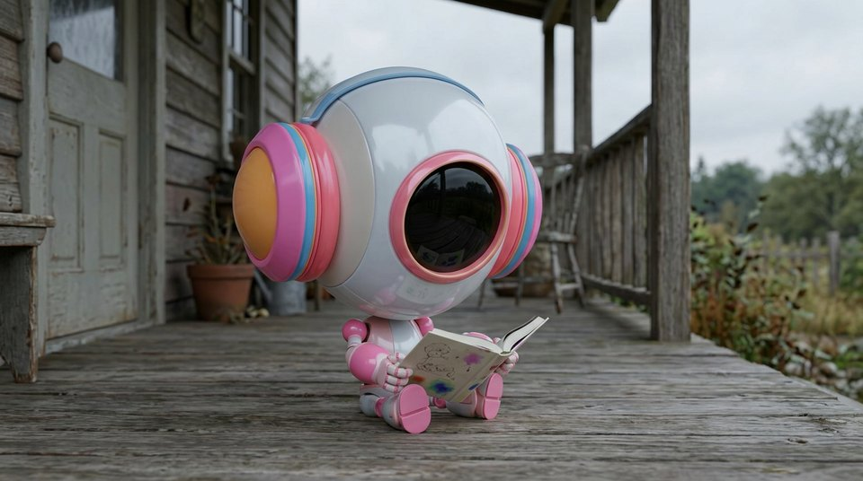

What it means
The soft, even light of a cloudy day. No harsh shadows, no squinting. Very flattering and calm.
When to use it
Use for gentle, honest scenes and soft product shots. Great when harsh shadows keep ruining your image.
Try this
"woman reading on a porch, overcast light"
Pairs well with
muted palette · candid · soft focus
Works in
midjourney · nano-banana-pro · gpt-image-2 · seedance
Tags
Examples
